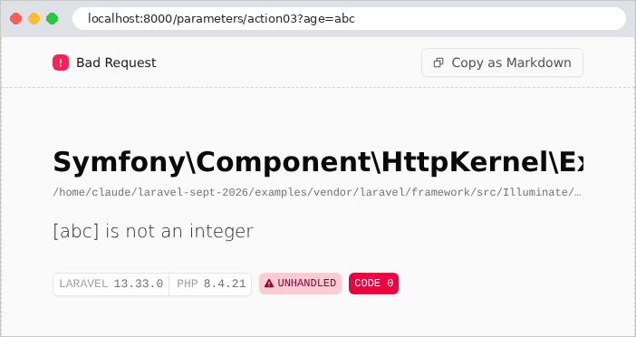
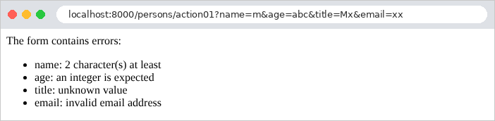

3. El modelo de la acción
Una acción requiere información enviada por el navegador: los parámetros de la URL ([?name=martin&age=42]), los campos de un formulario, el cuerpo JSON de la solicitud y, a veces, un encabezado HTTP de la solicitud. El curso original designa toda esta información como el modelo de la acción. Este capítulo muestra cómo una acción de [Laravel] recupera esta información, la convierte al tipo correcto y la valida. Este proceso se denomina enlace de datos (data binding).
[Laravel] proporciona acceso a la información de la solicitud mediante el objeto [Request] (ejemplo 05), en forma de cadenas de caracteres, junto con algunos métodos de conversión. Para verificar los datos, dispone de un completo sistema de validación: los datos esperados se describen mediante reglas (“obligatorio”, “un entero entre 0 y 150”, etc.), y [Laravel] comprueba que los datos las cumplan. Primero leeremos los parámetros manualmente (ejemplo 07) y luego usaremos estas reglas para validarlos (ejemplos 08 al 12). En el próximo capítulo, el mismo sistema validará los formularios HTML.
Nota sobre la terminología: en el próximo capítulo, la palabra “modelo” se referirá principalmente a los datos que una acción pasa a su vista. El modelo de una acción, tal como se usa en este capítulo, es lo que ella recibe. [Laravel] también usa la palabra *modelo* para las clases que representan tablas de la base de datos (capítulo 9): este es un tercer significado.
Los ejemplos 07 al 12 se ejecutan de la misma manera que los del capítulo anterior: abra un terminal en el directorio del ejemplo y ejecute [php artisan serve]; [Ctrl-C] detiene el servidor. Sus archivos [bootstrap/app.php] son todos similares: agregan el middleware [ReadableJson] del ejemplo 03, lo que da como resultado un JSON legible. Solo los comentaremos cuando introduzcan algo nuevo.
3.1. Ejemplo 07: los parámetros de la URL
Los parámetros de la URL son la parte que sigue a [?]: [?name=martin&age=42]. Esta parte se denomina cadena de consulta (*query string*). Cada parámetro es un par [name=value]; los pares se separan con [&]. El controlador [ParametersController]:
- línea 14: el método [query] de la solicitud devuelve el valor de un parámetro de la URL, ya decodificado, o [null] si falta; nunca provoca un error;
- Línea 15: la acción muestra el valor y su tipo: la función [get_debug_type] devuelve el nombre del tipo de un valor. Un valor recuperado de la URL es siempre una cadena ([string]). El operador [.] concatena la cadena interpolada y el tipo;
- línea 22: el método [integer] lee el parámetro y lo convierte en un entero. Si la conversión falla ([abc]), o si falta el parámetro, devuelve 0: la acción no puede distinguir estos casos de una edad de 0 realmente ingresada, y el error de entrada pasa inadvertido. De manera similar, existen [float], [boolean] ([1], [true], [on], [yes] son válidos), [string], [date] (ejemplo 12), [enum];
- líneas 30–40: un parámetro obligatorio y una conversión manual que distingue entre los dos errores posibles. [abort(400, message)] termina la acción con una respuesta 400 (*Bad Request*, la solicitud no es válida), acompañada del mensaje (véase el ejemplo 03). La función [filter_var] de [PHP], con el filtro [FILTER_VALIDATE_INT], devuelve el entero contenido en la cadena, o [false] si la cadena no es un entero;
- línea 46: el segundo parámetro de [integer] es un valor predeterminado, que se usa si falta el parámetro. Es el caso típico del número de página en una lista;
- línea 54: no es obligatorio dar a la variable [PHP] el mismo nombre que al parámetro de la URL. Los motores de búsqueda suelen usar un parámetro corto, como [q] (*query*);
- línea 61: sin parámetro, [query] devuelve todos los parámetros de la URL en un arreglo asociativo, que la acción devuelve: [Laravel] lo transforma en JSON (véase el ejemplo 03).
La tabla de rutas declara las seis rutas mediante un ciclo:
- Línea 8: el ciclo [foreach] recorre un arreglo: en cada iteración, la variable [$action] toma el valor del siguiente elemento. Cada ruta lleva el nombre de su acción: [Route::get('action01', 'action01')]... La tabla de rutas es simplemente otro archivo [PHP]: se puede escribir en ella cualquier código.
Probemos cada acción con [curl]. Primero con un parámetro presente y luego ausente:
Las comillas alrededor de "URL" son necesarias en un terminal: sin ellas, el shell interpretaría [&] (que ejecuta un comando en segundo plano en [Linux]) y [?]. El valor [null], al insertarse en una cadena, se convierte en una cadena vacía. Un valor que contenga espacios o caracteres especiales debe codificarse en la URL: un espacio se convierte en [%20], y [&] se convierte en [%26] (de lo contrario, separaría dos parámetros). El navegador hace esto automáticamente; con [curl], hay que escribirlo explícitamente. [PHP] decodifica el valor antes de que la acción lo lea:
Conversión con [integer]: exitosa, fallida y luego sin parámetros:
Falta el parámetro obligatorio de la acción 03 y luego es inválido. Solicitamos una respuesta JSON (encabezado [Accept], véase el ejemplo 03), que contiene el mensaje de [abort]:
En un navegador, en modo de depuración, una respuesta 400 muestra la página de error de [Laravel], con el mensaje:

El valor predeterminado y el parámetro renombrado:
Por último, todos los parámetros a la vez. El parámetro [name] aparece dos veces:
El parámetro [name] conserva solo su último valor: esta es una regla de [PHP], que volveremos a ver en el ejemplo 10. La edad sigue siendo una cadena (["42"], entre comillas en JSON): no se solicitó ninguna conversión. En un navegador (aquí, [Chromium]), el JSON se muestra exactamente como lo formateó el servidor; la casilla “Pretty-print” lo indentaría si no lo estuviera ya. La barra de direcciones también muestra la codificación de los caracteres con tilde en la URL ([é] se convierte en [%C3%A9], con sus dos bytes en [UTF-8]):

Este primer ejemplo ilustra los límites del enfoque manual: para cada parámetro hay que escribir la lectura, la conversión y el tratamiento de los valores ausentes y de los errores. Con diez parámetros, el código de la acción quedaría abrumado por estas verificaciones. Es preferible describir lo que se espera y dejar que el framework lo verifique. Ese es el propósito del siguiente ejemplo.
3.2. Ejemplo 08: un modelo de acción descrito mediante una clase
[Laravel] valida los datos de la solicitud mediante reglas de validación. Una regla tiene un nombre ([required], [integer], [email]...) y, en ocasiones, parámetros ([min:2], [between:0,150]); las reglas de un campo se escriben como una cadena, separadas por [|], o como un arreglo. [Laravel] ofrece cerca de un centenar. El lugar natural para describir el modelo de una acción es una solicitud de formulario (*form request*): una clase que hereda de [FormRequest], y cuyo método [rules] devuelve las reglas de cada parámetro.
3.2.1. El modelo: app/Http/Requests/PersonRequest.php
- Línea 10: la clase ([extends]) hereda de [FormRequest], que a su vez hereda de [Request]: un objeto [PersonRequest] es una solicitud, con todos los métodos del ejemplo 07, más reglas de validación;
- líneas 13–24: las reglas, en un arreglo asociativo: para cada parámetro, la cadena que contiene sus reglas;
- línea 17: [required]: el parámetro es obligatorio (si falta o está vacío, se rechaza); [string]: una cadena; [min:2] y [max:20]: para una cadena, su longitud debe estar entre 2 y 20 caracteres;
- línea 19: [integer]: el valor debe ser un entero (["42"] es válido, ["abc"] no lo es); [between:0,150]: para un número, su valor debe estar entre 0 y 150. Las reglas [min], [max] y [between] se adaptan así al tipo del valor: una longitud para una cadena, un valor para un número y una cantidad de elementos para un arreglo (por ejemplo, 10);
- línea 21: [in:Mr,Mme,Melle]: uno de los tres valores indicados, y solo esos;
- línea 23: [nullable]: el parámetro es opcional (se acepta si está ausente o vacío); [email]: si está presente, una dirección de correo electrónico válida;
- líneas 28–33: un método agregado a la clase: devuelve los datos validados en forma de un objeto [Person] (véase más abajo). [$this->validated()] devuelve únicamente los datos que han sido validados: un parámetro sin regla no se incluye. La validación que realiza [Laravel] verifica los datos, pero no los convierte: la edad validada sigue siendo la cadena ["42"]. Es el operador de conversión [(int)] el que la convierte en un entero. El operador [??] devuelve su operando izquierdo si existe y no es [null]; de lo contrario, devuelve el operando derecho: [$values['email'] ?? null] se evalúa como [null] si la dirección no está en el arreglo.
Este modelo describe los datos esperados; no contiene instrucciones de validación. Esto se conoce como estilo declarativo. La clase [Person] es una clase inmutable, similar a la del ejemplo 03:
- línea 12: [?string]: una cadena, o [null].
3.2.2. La acción: app/Http/Controllers/PersonsController.php
- Línea 14: la acción requiere un parámetro de tipo [PersonRequest], mientras que el ejemplo 07 requería un [Request]. [Laravel] crea entonces un objeto [PersonRequest] a partir de la solicitud actual y lo valida antes de llamar a la acción: verifica cada regla de cada parámetro. Si se cumplen todas las reglas, se llama a la acción. De lo contrario, [Laravel] lanza una excepción [ValidationException], que contiene una lista de todos los errores (no solo el primero), y la acción nunca se llama: por lo tanto, no tiene que ocuparse de datos inválidos;
- Líneas 16–20: la acción devuelve los datos validados tal cual y luego como un objeto [Person], junto con el tipo de la edad, para ilustrar la diferencia.
¿Quién maneja la excepción [ValidationException]? Por defecto, la maneja el propio [Laravel], y su respuesta depende del cliente. Para una solicitud que espera JSON (encabezado [Accept: application/json]), la respuesta es un 422 (*Unprocessable Content*), que describe los errores en JSON. Para una solicitud normal proveniente de un formulario HTML, la respuesta es una redirección a la página anterior, con los errores conservados para el formulario que se volverá a mostrar (lo veremos en el próximo capítulo). Aquí queremos una respuesta de error en JSON, en todos los casos, con el código 400. Ese es el papel de [bootstrap/app.php].
3.2.3. Manejo de errores: bootstrap/app.php
- Líneas 17–30: al método [withExceptions] ahora se le pasa una función, que recibe el objeto [$exceptions] que describe el manejo de excepciones de la aplicación;
- líneas 20–29: el método [render] registra un manejador de excepciones: una función a la que [Laravel] llama cuando una acción lanza una excepción del mismo tipo que su parámetro (aquí, [ValidationException] o una clase derivada), y cuyo valor de retorno es la respuesta enviada. [Laravel] identifica el tipo de la excepción que se está manejando a partir del tipo del parámetro de la función. Declarado en [bootstrap/app.php], el manejador se aplica a todas las acciones de la aplicación: toda acción que valida un modelo se beneficia de él, sin tener que escribir una sola línea de código de manejo de errores;
- Líneas 23–27: [$e->errors()] devuelve los errores en un arreglo asociativo: para cada campo con error, la lista de sus mensajes de error. El ciclo [foreach ($array as $key => $value)] recorre tanto las claves como los valores. [$errors[] = ...] agrega un elemento al final del arreglo [$errors];
- línea 28: una respuesta JSON, con código de estado 400.
3.2.4. Ejecución
Un modelo válido:
Los datos validados contienen solo los parámetros recibidos; la edad está en formato de cadena; el objeto [Person] contiene la edad como entero (sin comillas en JSON), y la dirección ausente es [null]. Un nombre rodeado de espacios ([%20]) y una dirección presente:
Los espacios que rodeaban el nombre han desaparecido sin que lo pidiéramos: dos componentes de middleware, ejecutados por [Laravel] en todas las solicitudes, transforman los parámetros recibidos antes de que una acción los lea. [TrimStrings] elimina los espacios que rodean cada cadena; [ConvertEmptyStringsToNull] reemplaza cada cadena vacía por [null]. Ahora no hay parámetros: faltan los tres campos obligatorios.
Cuatro campos inválidos a la vez:
Todos los errores se informan a la vez, lo que permite al usuario corregir todo de una sola vez. Para el campo de edad [abc], solo se señala la regla [integer] : la regla [between] no se aplica a un valor que no es un número. Los mensajes están en inglés, el idioma predeterminado de [Laravel]. El siguiente ejemplo los reemplaza por mensajes personalizados.
3.3. Ejemplo 09: validación realizada por la acción
En el ejemplo 08, un modelo inválido termina la acción y responde el manejador de la aplicación. Esto es conveniente para una API, cuyos clientes son programas que esperan una respuesta de error estandarizada. Sin embargo, una página web suele preferir volver a mostrar el formulario con los mensajes de error: en este caso, la acción debe decidir cómo tratar un modelo inválido. Las clases [PersonRequest] y [Person] son las del ejemplo 08.
3.3.1. Mensajes personalizados: lang/en/validation.php
Los mensajes de error de [Laravel] no están escritos de forma fija en el código: cada mensaje se identifica mediante una clave, y un archivo de idioma asocia un texto a cada clave. Los archivos en inglés vienen incluidos con el framework; la aplicación puede proporcionar sus propios archivos en la carpeta [lang], con una subcarpeta por idioma, para reemplazar estos mensajes o para agregar otros idiomas. El idioma de la aplicación se define en el archivo [.env]:
El archivo de mensajes de validación se llama [validation.php]:
- Línea 6: un archivo de idioma es un archivo [PHP] que devuelve un arreglo asociativo: para cada clave, su texto correspondiente;
- líneas 7–11: la clave de un mensaje de validación es el nombre de la regla que falló. Esta técnica (traducir a partir del nombre del error y no de su texto en inglés) es la que se usa en el caso de estudio: allí los textos se identifican mediante claves, que se traducen al idioma del usuario;
- líneas 15–19: las reglas que se adaptan al tipo del valor (por ejemplo, 08) tienen un mensaje para cada tipo: [string], [numeric], [array]. Los identificadores [:min] y [:max] se reemplazan por los parámetros de la regla ([min:2] significa “al menos 2 caracteres”). La etiqueta [:attribute], que no usamos, se reemplazaría por el nombre del campo.
Una clave ausente de este archivo conserva el mensaje en inglés del framework: [Laravel] combina el archivo de la aplicación con el suyo. Para otro idioma, una clave ausente recurre al idioma de respaldo, [APP_FALLBACK_LOCALE], que es el inglés por defecto. La comunidad publica traducciones completas de los mensajes de [Laravel], en muchos idiomas (el paquete [laravel-lang]).
3.3.2. La acción: app/Http/Controllers/PersonsController.php
- Línea 16: la fachada [Validator] crea un validador, un objeto que aplica reglas a datos. Los datos son los parámetros de la URL; las reglas son las de la clase [PersonRequest] del ejemplo 08. Una solicitud de formulario es una clase como cualquier otra: se puede crear una instancia de ella, mediante [new], para leer sus reglas;
- línea 17: [fails()] realiza la validación y devuelve [true] si al menos una regla falla. La propia acción determina qué ocurre a continuación: no se lanza ninguna excepción;
- Líneas 19–23: los errores, campo por campo. [errors()] devuelve un objeto [MessageBag] (una “bolsa” de mensajes), cuyo método [messages()] devuelve el arreglo asociativo campo → lista de mensajes. Para cada campo, el primer mensaje, [$messages[0]], se almacena en una etiqueta [<li>]. El operador [.=] agrega una cadena al final de otra;
- línea 26: los datos validados, en un arreglo asociativo;
- líneas 29–30: si tiene éxito, un mensaje de bienvenida. Dentro de una cadena entre comillas, [{$person['title']}] inserta un elemento del arreglo (las llaves delimitan la expresión). El nombre pasa por la función [e] de [Laravel] (de *escape*), que reemplaza los caracteres con significado especial en HTML ([<], [>], [&], ["], [']) por sus entidades ([<], [>]...): se mostrarán tal cual en lugar de ser interpretados. Sin esta precaución, un usuario podría ingresar un “nombre” que contenga HTML, o incluso [JavaScript], que se ejecutaría en el navegador de cualquiera que viera la página. Esta es la vulnerabilidad de seguridad más común en la web: la inyección de scripts (*XSS*, *cross-site scripting*). El título y la edad no requieren esta protección: sus valores han sido validados por las reglas (uno de tres valores permitidos, un entero). En el próximo capítulo, el motor de vistas [Blade] realizará este escape automáticamente para cualquier valor insertado en una página.
Una entrada válida, seguida de una entrada con cuatro errores:


La respuesta sin procesar a la segunda solicitud y la respuesta para un nombre que contiene HTML:
El nombre [<b>martin</b>] (codificado como [%3Cb%3E...] en la URL) se muestra tal cual, sin ponerse en negrita: sus etiquetas han sido neutralizadas. Observe que esta vez la respuesta tiene un código de estado 200: fue la acción la que decidió devolver una página normal que contiene los errores.
3.4. Ejemplo 10: parámetros múltiples
Un mismo parámetro puede aparecer varias veces en una URL: [?color=red&color=green]. Esto es lo que envía un navegador para un grupo de casillas de verificación con el mismo nombre, o para una lista de selección múltiple (véase el próximo capítulo). [PHP] trata este caso a su manera. El controlador [ArraysController]:
- línea 15: para [PHP], los parámetros de la URL forman un arreglo asociativo, en el que cada clave tiene un solo valor: un parámetro repetido reemplaza al anterior, y solo se conserva el último valor. Para comparar, la acción también devuelve la cadena de parámetros sin procesar tal como la envió el navegador: [$request->server(...)] lee las variables que el servidor web transmite a [PHP], entre ellas [QUERY_STRING];
- líneas 20–24: para recuperar todos los valores, el nombre del parámetro debe terminar con corchetes: [?color[]=red&color[]=green]. [PHP] entonces almacena los valores en un arreglo, y ese arreglo es el valor del parámetro [color]. El método [array] de la solicitud devuelve el parámetro como arreglo: vacío si está ausente, con un único elemento si tiene un solo valor sin corchetes;
- Líneas 31–36: el arreglo se valida con reglas. [array|min:1]: un arreglo con al menos un elemento (la regla [min] se aplica a la cantidad de elementos de un arreglo; véase el ejemplo 08). La clave [color.*] identifica a cada elemento del arreglo: cada uno debe ser uno de los tres colores;
- línea 41: el operador [!] (negación) se evalúa como [true] para un arreglo vacío, que se evalúa como “falso” en una condición.
El archivo [lang/en/validation.php] es el del ejemplo 09. Los resultados:
La opción [-g] de [curl] le impide interpretar por su cuenta los corchetes de la URL. Un navegador, en cambio, los codifica ([color%5B%5D=red]), lo que [PHP] también entiende. En cuanto a HTML, basta con nombrar las casillas de verificación de un grupo [color[]]: eso es lo que hará el ejemplo 18. Esta regla se aplica específicamente a [PHP]: los frameworks de otros lenguajes ([Flask], [Spring MVC], [ASP.NET Core]) conservan todos los valores de un parámetro repetido, sin corchetes.
Validación: exitosa, luego fallida por un color desconocido y después por una lista vacía:
El error sobre el color desconocido se refiere a [color.1]: el campo y el índice del elemento problemático en el arreglo (el segundo, con índices que comienzan en 0).
3.5. Ejemplo 11: parámetros de una solicitud POST
Los ejemplos anteriores usaban solicitudes GET, cuyos parámetros están contenidos en la URL. Una solicitud POST transporta sus datos en su cuerpo, en dos formas principales:
- campos de un formulario HTML: el cuerpo tiene la misma sintaxis que una cadena de consulta ([name=martin&age=42]), y su tipo (encabezado [Content-Type]) es [application/x-www-form-urlencoded];
- un documento JSON, enviado por un programa ([JavaScript] en una página, cliente de una API...): el tipo es [application/json].
El controlador [PostController]:
- línea 18: el encabezado [Content-Type] de la solicitud;
- línea 19: el método [post] devuelve los parámetros del cuerpo de la solicitud en un arreglo asociativo; [post('name')] devolvería un solo parámetro. Los campos de formulario siguen las reglas del ejemplo 10: un campo repetido debe tener un nombre terminado en [[]];
- líneas 26–27: [isJson()] comprueba el tipo declarado por el encabezado [Content-Type]. Un cuerpo que no está declarado como JSON se rechaza con un error 415 (*Unsupported Media Type*);
- líneas 30–34: [getContent()] devuelve el cuerpo sin procesar de la solicitud, una cadena; la función [json_decode] de [PHP] la deserializa: el texto JSON se convierte en un valor [PHP] (el segundo parámetro, [true], exige arreglos asociativos para los objetos JSON). Con la opción [JSON_THROW_ON_ERROR] (un parámetro con nombre), un texto mal formado lanza una excepción [JsonException], que el bloque [try] / [catch] intercepta para devolver un error 400. El método [json()] de la solicitud haría lo mismo, pero ante un JSON mal formado simplemente devolvería un resultado vacío;
- Línea 36: el método [input] busca un parámetro en todas partes: en el cuerpo de la solicitud —ya sea un formulario o JSON— y luego en la URL. Este es el método más utilizado, porque no depende del formato de la solicitud;
- línea 42: un campo de formulario, leído con [input];
- líneas 49–56: las reglas de la clase [PersonRequest] del ejemplo 08, aplicadas esta vez a los campos del formulario. El código es el mismo que para los parámetros de la URL: solo cambia el origen de los datos. [sort] ordena los mensajes para garantizar una respuesta coherente. El operador ternario [condition ? a : b] devuelve [a] si la condición es verdadera y [b] en caso contrario.
La tabla de rutas declara rutas POST, y [bootstrap/app.php] desactiva la protección CSRF para estas URL, como se mostró en el ejemplo 02:
Con [curl], la opción [-d] (*data*) envía un cuerpo; la solicitud pasa entonces a ser una solicitud POST, de tipo [application/x-www-form-urlencoded], a menos que la opción [-H] (*header*) especifique otro tipo. La opción [-X POST] establece explícitamente el método (aquí es opcional). Los campos de un formulario, incluido un campo repetido:
Un cuerpo JSON que contiene un entero y un arreglo:
Las comillas del JSON van precedidas de [\] para evitar que termine la cadena del comando; en el caso de [Linux] y [macOS], también se puede encerrar el JSON entre apóstrofos: [-d '{"name": "martin"}']. A diferencia de los campos de formulario, el JSON transporta tipos de datos: la edad ya es un entero. Un cuerpo que no es JSON, seguido de un JSON mal formado (solicitando una respuesta JSON para ver el mensaje):
Un solo campo y luego la misma URL solicitada con GET:
La URL existe, pero no para el método GET: [Laravel] devuelve un 405 (*Method Not Allowed*), y su encabezado [allow] enumera los métodos aceptados. Por último, las reglas aplicadas a los campos del formulario, que primero se cumplieron y luego no:
3.6. Ejemplo 12: enlace y validación personalizados
Los tipos y las reglas estándar no siempre bastan. Este ejemplo muestra tres formas de ampliar el enlace y la validación:
- un tipo enlazado a un parámetro de ruta: una fecha en formato francés, [23-09-2026], en la ruta de la URL;
- un middleware que proporciona a la acción un parámetro que no proviene de la URL, sino de un encabezado HTTP;
- una regla de validación personalizada (sin espacios) y la conversión de una fecha [dd/mm/yyyy].
3.6.1. Un tipo enlazado a un parámetro de ruta: app/Binding/DayFr.php
Vimos en el ejemplo 02 que un parámetro de ruta se pasa a la acción como una cadena, o como un entero si el parámetro de la acción es de tipo [int]. [Laravel] también puede convertir un parámetro de ruta en un objeto si la acción requiere un parámetro cuya clase implementa la interfaz [UrlRoutable]. Este es el enlace de rutas (*route model binding*), que [Laravel] usa principalmente para entidades de base de datos (un identificador en la URL se convierte en el objeto correspondiente; véase el capítulo 9). Aquí lo usamos para una fecha.
- línea 11: la clase implementa la interfaz [UrlRoutable], cuyos cuatro métodos son los siguientes;
- línea 13: la fecha, un objeto [CarbonImmutable]. [Carbon] es la biblioteca de fechas de [Laravel]; extiende la clase [DateTime] de [PHP] con cientos de métodos. La versión [Immutable] crea un nuevo objeto con cada modificación ([$date->addDay()] devuelve una nueva fecha), en lugar de modificar el objeto existente. El constructor tiene un valor predeterminado, [null]: [Laravel] debe poder crear un objeto [DayFr] vacío, cuyo método [resolveRouteBinding] llamará a continuación;
- líneas 18–27: [resolveRouteBinding] convierte el texto de la ruta en un objeto: devuelve el objeto vinculado, o [null] si el valor no es válido. [CarbonImmutable::createFromFormat] analiza una cadena según un formato: [d] para el día, [m] para el mes y [Y] para el año de cuatro dígitos; el [!] inicial pone la hora en cero. [createFromFormat] es tolerante: acepta [31-02-2026] y lo interpreta como el 3 de marzo. La validación de la línea 24 rechaza este caso: la fecha, una vez reformateada, debe coincidir exactamente con el texto recibido. [new static(...)] crea un objeto de la clase actual. Cuando el método devuelve [null], [Laravel] responde con un error 404: la URL no remite a nada;
- líneas 31–34: la operación inversa, utilizada por la función [route] para construir una URL a partir de un objeto [DayFr]. [format] da formato a una fecha;
- líneas 36–41: los dos últimos métodos de la interfaz, que se utilizan para las entidades de base de datos, no tienen ningún papel aquí.
3.6.2. Un parámetro proporcionado por un middleware: app/Binding/DetectLanguage.php
Una acción de [Laravel] recibe como parámetros los parámetros de la ruta y los objetos que el contenedor puede proporcionar (la solicitud, los servicios). Para suministrarle información adicional, calculada a partir de la solicitud, se puede encargar su cálculo a un middleware (ejemplo 03), que la incluye en la solicitud antes de la acción:
- Línea 16: el encabezado de solicitud [Accept-Language] indica los idiomas del usuario, por orden de preferencia: [fr-FR,fr;q=0.9,en;q=0.8] (el coeficiente [q] mide la preferencia, en una escala de 0 a 1). [getPreferredLanguage] selecciona, entre los idiomas que ofrece la aplicación, el que prefiere el usuario; si no se proporciona ningún encabezado, es el primero de la lista;
- línea 19: la solicitud tiene atributos: un arreglo de información que la aplicación almacena allí para las funciones que procesarán la solicitud después. El idioma se almacena allí con el nombre [language];
- Línea 20: la solicitud continúa hacia la acción.
La acción recibirá esta información mediante un atributo de [PHP] colocado antes de su parámetro (véase el controlador).
3.6.3. Una regla "personalizada" y una conversión: NoSpace.php y SearchRequest.php
- Línea 9: una regla de validación "personalizada" es una clase que implementa la interfaz [ValidationRule];
- Líneas 12–17: su método [validate] recibe el nombre del campo, su valor y una función, [$fail], a la que llama con el mensaje de error si el valor no es válido. [str_contains] comprueba la presencia de un texto en una cadena; [(string)] convierte el valor en una cadena. El tipo [mixed] designa cualquier tipo.
La regla se utiliza en la consulta del formulario de búsqueda:
- línea 18: las reglas de un campo pueden especificarse en un arreglo en lugar de una cadena; esto es indispensable para una regla "personalizada", que es un objeto;
- línea 20: la regla [date_format:d/m/Y] verifica que el valor sea una fecha en el formato especificado y que esa fecha exista;
- Líneas 25–28: conversión de fechas: el método [date] de una consulta lee un parámetro y lo convierte en una fecha ([Carbon]) según el formato especificado; devuelve [null] si falta el parámetro. El operador [?->] llama a un método si el objeto no es [null], y devuelve [null] en caso contrario; [toImmutable] convierte la fecha en [CarbonImmutable];
- líneas 32–36: el método [failedValidation], heredado de [FormRequest], se llama cuando la validación falla; el método de [FormRequest] lanza la excepción [ValidationException] (ejemplo 08). Aquí lo redefinimos, solo para esta clase: lanza una [HttpResponseException], una excepción que lleva una respuesta predefinida, que [Laravel] envía tal cual. La respuesta contiene el primer mensaje de error ([first()]), en texto sin formato, con el código de estado 400. Es una manera de tratar los errores de validación de una acción de forma distinta a los del resto de la aplicación.
El mensaje de la regla [date_format] se personaliza mediante el archivo [lang/en/validation.php]:
- Línea 5: la etiqueta [:input] se reemplaza por el valor recibido.
3.6.4. El controlador: app/Http/Controllers/ExamplesController.php
- Líneas 14–18: el parámetro [$day] es de tipo [DayFr]: [Laravel] vincula el parámetro de ruta [{day}] a un objeto [DayFr] mediante su método [resolveRouteBinding]. [toDateString()] escribe la fecha en formato internacional ([2026-09-23]). La función [route] construye la URL de esta misma acción a partir del objeto, mediante su método [getRouteKey]; su tercer parámetro, [false], solicita una URL relativa (sin el protocolo ni la máquina);
- Líneas 23–25: el parámetro [$language] está precedido por un atributo [PHP], escrito como [#[...]]: información asociada al código, que [PHP] ignora pero que las bibliotecas leen (el equivalente de las anotaciones en [Java]). El atributo [RequestAttribute('language')] indica al contenedor que proporcione, para este parámetro, el atributo [language] de la solicitud, calculado por el middleware [DetectLanguage];
- Líneas 29–33: la acción recibe la solicitud de formulario, que ya ha sido validada (ejemplo 08). [validated('keyword')] devuelve un único campo validado; [since()] devuelve la fecha convertida.
La tabla de rutas:
- líneas 10–11: la ruta del calendario tiene un nombre (para la función [route]), y su parámetro está restringido por una expresión regular: [[0-9]] designa un solo dígito, [{2}] designa la repetición del patrón anterior: dos dígitos, un guion, dos dígitos, un guion, cuatro dígitos. Un segmento de ruta con un formato distinto no coincide con la ruta (404), sin siquiera consultar a [DayFr];
- línea 13: el método [middleware] asocia un middleware a una ruta: solo se ejecuta para esa ruta, antes de la acción. Veremos este mecanismo a lo largo del curso: los middlewares que exigen un usuario autenticado, en el capítulo sobre autenticación, se asocian a las rutas de la misma manera.
3.6.5. Ejecución
El tipo asociado al parámetro de ruta:
La fecha se muestra en formato internacional, pero la URL construida por [route] ha vuelto al formato francés. El 31 de febrero no existe: 404. Una fecha en formato internacional, [2026-09-23], no coincide con el patrón descrito por la expresión regular: también 404.
El middleware. La opción [-H] de [curl] establece el encabezado [Accept-Language]:
Sin el encabezado [Accept-Language] ([curl] no envía ninguno), se utiliza el primer idioma de la lista. El capítulo sobre internacionalización retomará este tema, con la selección del idioma por parte del usuario.
La regla "de la casa" y la conversión de fechas:
3.6.6. Conclusión
Resumamos los medios de que dispone una acción para obtener su plantilla:
Parámetros de ruta | los parámetros de la acción, que comparten el mismo nombre; convertidos según su tipo ([int $id]), restringidos mediante [whereNumber], [where]...; vinculados a un objeto mediante [UrlRoutable] |
Parámetros de la URL | [$request->query(...)], [integer], [array], [date]...; un parámetro repetido se escribe [name[]] |
Campos de un formulario POST | [$request->post(...)], o [$request->input(...)], que busca en todas partes |
JSON del cuerpo | [$request->input(...)], [$request->json()], o [json_decode($request->getContent())] |
Encabezados | [$request->header(...)], y los métodos que los analizan, como [getPreferredLanguage] |
Validación | de reglas: un [FormRequest] (validación antes de la acción) o [Validator::make] (validación por la acción); reglas "personalizadas" ([ValidationRule]) |
Mensajes | los archivos [lang/xx/validation.php] y el archivo de idioma [APP_LOCALE] |
Errores comunes | [$exceptions->render(...)] en [bootstrap/app.php] (toda la aplicación), [failedValidation] (una solicitud de formulario) |
Parámetro calculado | Un middleware que almacena información en los atributos de la solicitud, [#[RequestAttribute]] |
Los formularios HTML, en cambio, requieren más que la validación: deben mostrarse, volver a mostrarse con lo ingresado por el usuario y los errores eventuales, y protegerse contra las solicitudes falsificadas. Este es el tema del próximo capítulo, una vez presentadas las vistas.